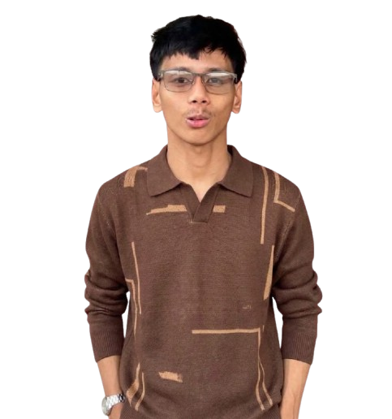

Hello, I'm Nathaniel Sumaoang.
A PWD Freelancer Software & Web Developer behind Nath Solution.
Welcome to my portfolio. I build software projects, websites, applications and systems.
Explore my work
"Hindi Hadlang Ang Kapansanan Ang Magpatuloy Sa Buhay."
- Nathaniel Sumaoang
I'm Nathaniel Sumaoang — a software developer, entrepreneur, and the person behind Paniqui’s Special Peanut Butter. I believe that every great idea begins with curiosity, creativity, and the courage to turn a vision into reality. Whether I'm developing digital solutions through code or building a business inspired by local flavor and tradition, I strive to create something meaningful, practical, and valuable to the people it serves.
My journey brings together two worlds that continue to inspire me: technology and entrepreneurship. As a software developer, I'm passionate about exploring how technology can solve problems, simplify everyday tasks, and create better experiences for people. I enjoy the process of transforming concepts into functional digital solutions, from planning and designing interfaces to developing features that make applications more accessible, efficient, and user-friendly. For me, software development is more than writing lines of code; it's about understanding people's needs, approaching challenges with creativity, and continuously finding better ways to bring ideas to life.
I believe that being a developer also means being a lifelong learner. Technology is constantly evolving, and every new tool, programming language, or development challenge provides an opportunity to improve. I'm committed to strengthening my technical knowledge, refining my problem-solving abilities, and expanding my understanding of how digital systems work. I value the balance between creativity and logic, attention to detail and big-picture thinking, and innovation and reliability. My goal is to continue growing as a developer while creating digital experiences that are useful, thoughtfully designed, and built around real needs.
Beyond technology, I have a strong interest in business, creativity, and the process of building something from the ground up. I see entrepreneurship as an opportunity to turn ideas into products, services, and experiences that people can appreciate. It requires more than having a vision; it also demands dedication, adaptability, patience, and a willingness to learn from both successes and setbacks. I believe that meaningful businesses are built through consistency, genuine value, and the trust developed between a brand and the people who support it.
One expression of this entrepreneurial journey is Paniqui’s Special, a peanut butter brand inspired by the character of our hometown and the simple pleasures that bring people together. The idea represents my appreciation for familiar flavors, shared moments, and the warmth of enjoying something delicious with family and friends. I want the brand to be more than a product on a shelf. I want it to represent care, creativity, and a connection to home — something people can remember, enjoy, and proudly share with others.
Building a brand also gives me the opportunity to apply the way I think as a software developer to the world of business. Both fields involve identifying problems, understanding an audience, developing solutions, paying attention to details, and improving through feedback. In technology, I work toward creating better digital experiences; in business, I aim to create a better experience for customers. Although the work may look different, the principles remain similar: start with a clear purpose, stay open to learning, and consistently work toward making the result better.
I am particularly interested in the possibilities that emerge when technology and entrepreneurship come together. Digital tools can help businesses organize their operations, reach more people, communicate effectively, and discover new opportunities for growth. I believe that creativity and technology can work hand in hand, helping small businesses build their identity and compete in an increasingly digital world. This perspective encourages me to explore new ideas, develop new skills, and look for opportunities where innovation can make a practical difference.
For me, growth is not measured only by the projects completed or the products created. It is also reflected in the lessons learned, the challenges overcome, the relationships built, and the willingness to keep moving forward. Every project presents a chance to improve my craft, while every business experience teaches me something new about responsibility, customer expectations, and the value of persistence. I understand that meaningful progress takes time, and I welcome the process of learning, adjusting, and becoming better with every step.
At the heart of everything I pursue is the desire to create something that matters. Whether developing software, exploring a new business idea, or working to grow Paniqui’s Special, I want my efforts to reflect creativity, dedication, and a genuine commitment to improvement. I hope to continue turning ideas into reality, discovering new possibilities, and building projects that bring value to people and open doors to future opportunities.
Thank you for taking the time to get to know me and for being part of this journey. Whether you're visiting to discover my work in software development, learn more about my entrepreneurial interests, or explore Paniqui’s Special, I'm grateful to have you here. Every visit, every word of encouragement, and every person who supports what I'm building contributes to the journey in its own way.
This is my story so far — a continuing journey of technology, entrepreneurship, creativity, and growth. I'm excited for the ideas still waiting to be developed, the opportunities still waiting to be explored, and the meaningful things that can be created along the way. The journey is ongoing, and I'm looking forward to what comes next.
There's more to
share.
Discover Paniqui's Special, explore the jars, and find your next favorite peanut butter moment.
Discover the jars